From the default Rails page to a real landing page, one file at a time.
KURT TAPEL
A homepage that greets people, sends them where they need to go, and shows live data.
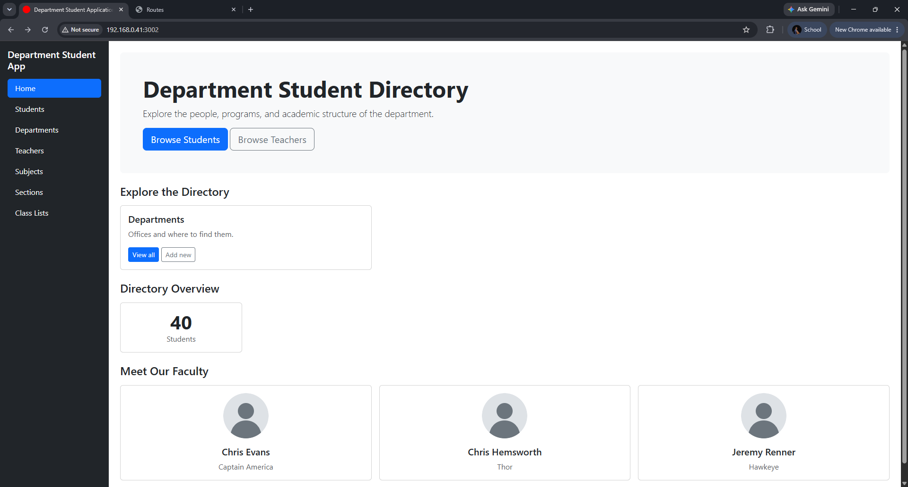
Title, intro and a call-to-action button
Cards that link to every part of the app
Live counts straight from the database
Teacher cards generated by a loop
Our app has pages for students, teachers, subjects… but no homepage.
/ shows Rails' default welcome page./ should be./ is our page.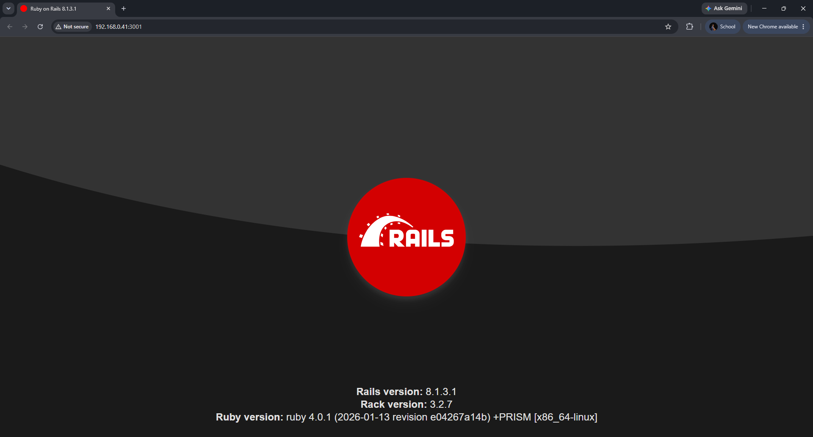
Every page goes through the same four pieces. Rails finds each one by naming convention.
Which code handles this URL?
Gets the data ready.
HTML for this page's content.
Sidebar + <%= yield %> hole.
root "home#index" → HomeController#index → home/index.html.erb → inside the layout.root is the special route for /."home#index" = HomeController, index action.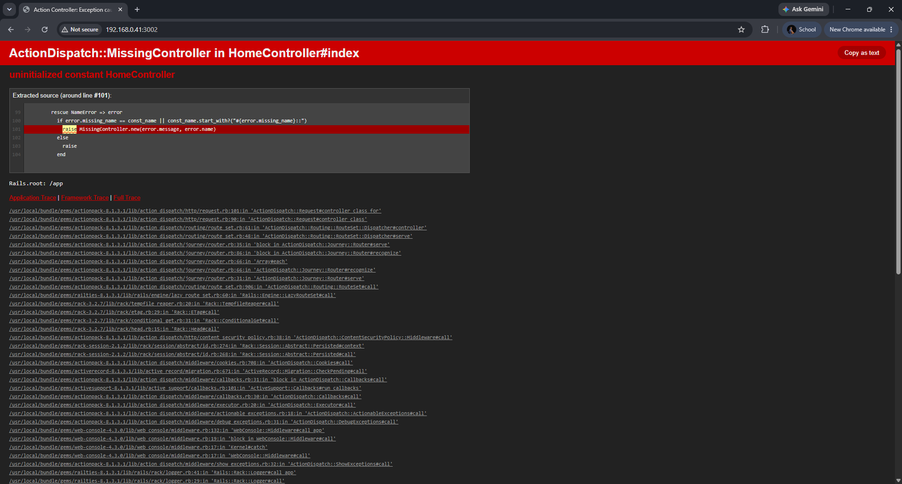
HomeController…HomeController lives in home_controller.rb: CamelCase class, snake_case file.< ApplicationController inherits the app-wide settings.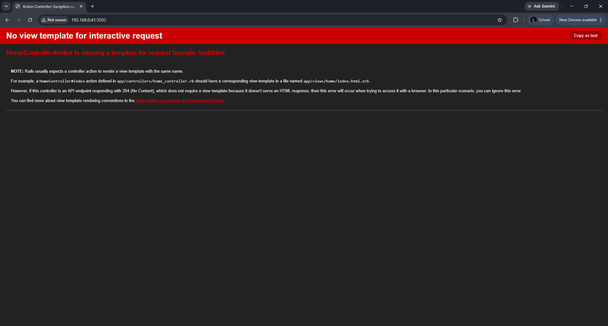
app/views/home/index.html.erb. The error tells you the next step.home), file = action (index), .html.erb = HTML + Ruby.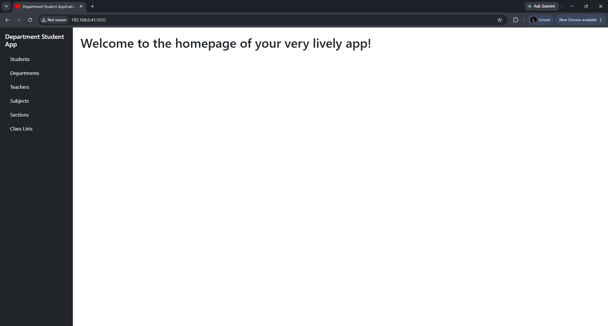
<h1> landed exactly where the layout says <%= yield %>. Frame + picture.root_path was created by your Step 1 route. It means "/".sidebar_link (in ApplicationHelper) adds active when the controller is "home".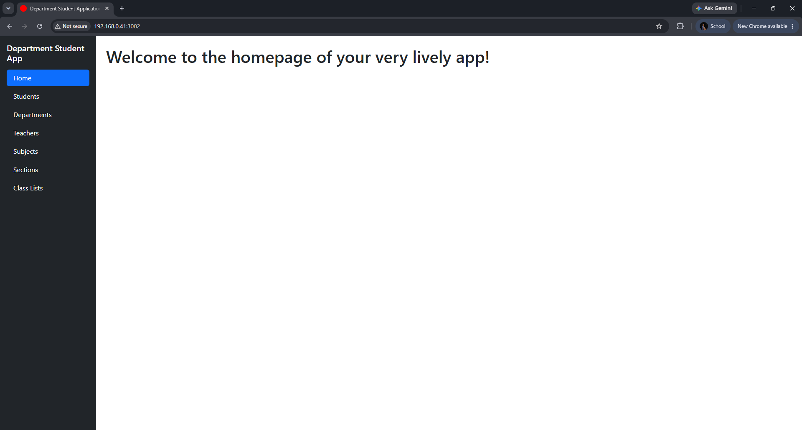
Counts and faculty cards need records to show. db/seeds.rb creates them in one command.
find_or_create_by! creates a record only if it's missing: safe to run twice.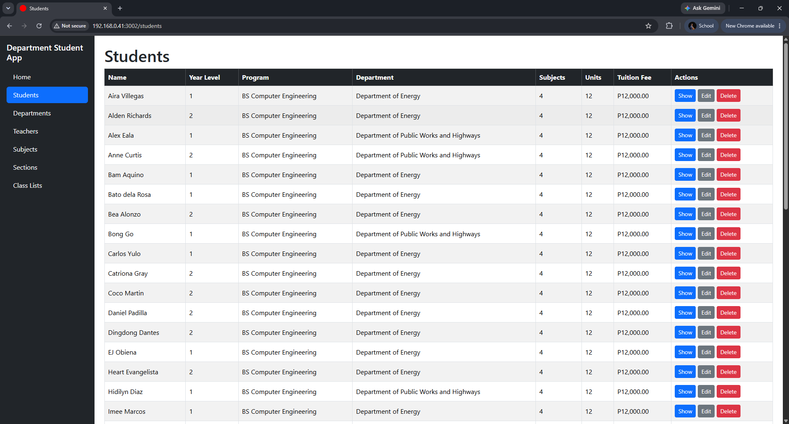
| p-5 · mb-4 | Padding inside · margin below |
| bg-body-tertiary rounded-3 | Soft grey box, rounded corners |
| display-5 fw-bold · lead | Big bold title · softer intro text |
| link_to … students_path | Renders <a href="/students"> |
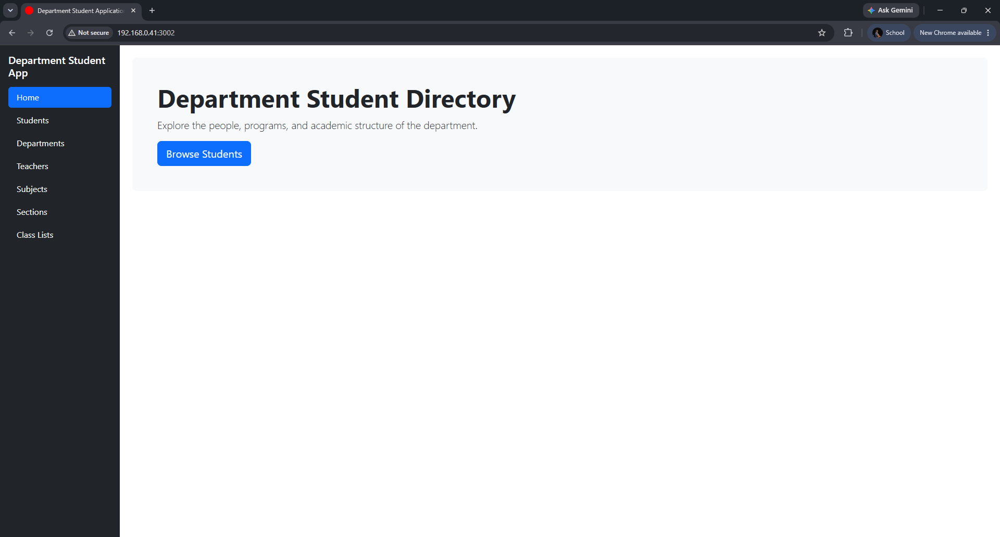
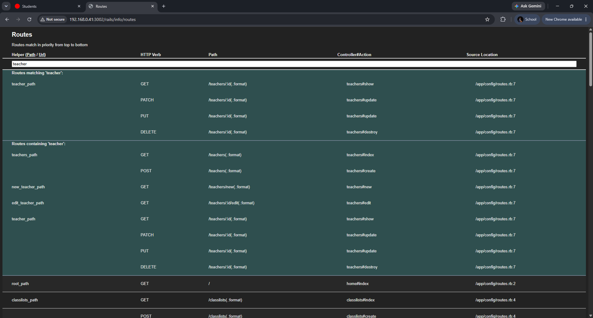
/rails/info/routes while the app runs (development only). Type in the search box to filter.| Helper | Path | Meaning |
|---|---|---|
| teachers_path | /teachers | All teachers (no id) |
| new_teacher_path | /teachers/new | The "add" form |
| teacher_path(t) | /teachers/:id | One teacher (needs id) |
| edit_teacher_path(t) | /teachers/:id/edit | Edit one teacher |
teacher_path without an id fails with missing required keys: [:id].resources :teachers, created all of these.row → col-… → card.col-sm-6 col-lg-4: a row has 12 units. Phone: full · tablet: 2 per row · desktop: 3 per row.g-3 = gap between cards · h-100 = equal heights.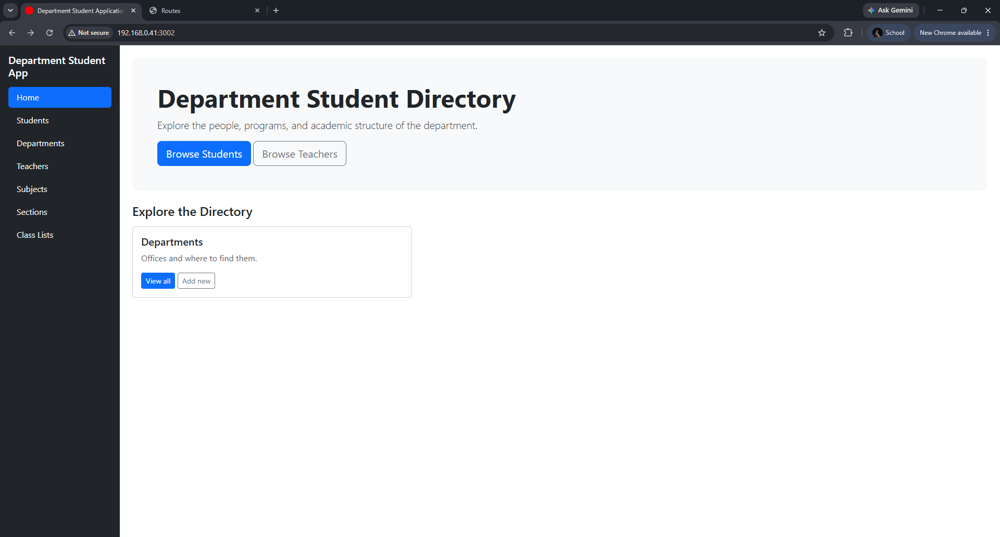
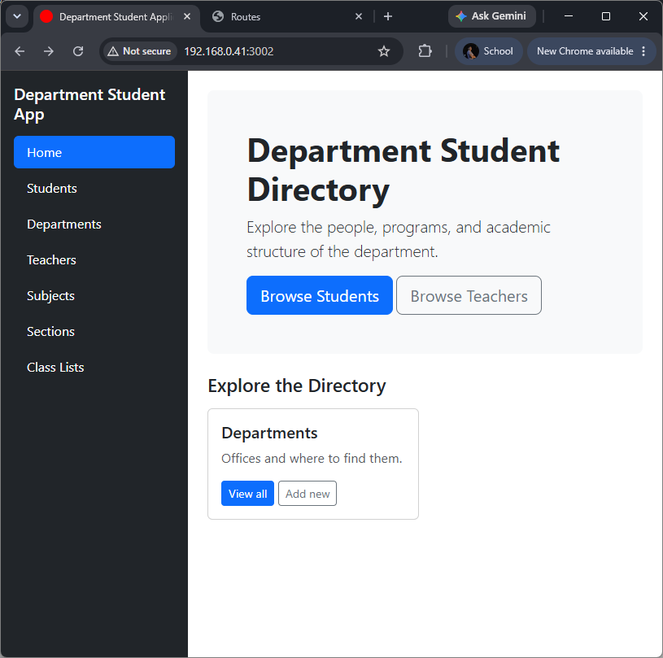
Narrow window: the card grows from 1/3 to 1/2. Same HTML, different screen. That's responsive.
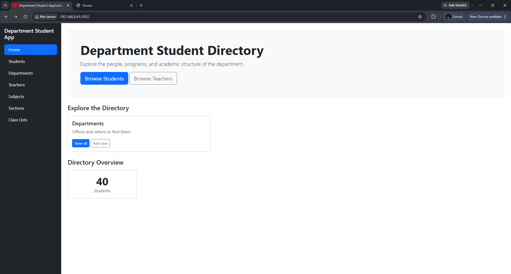
col-6 col-md-4 col-xl-2: 2 per row on phones, 3 on tablets, 6 on big screens.@student_count = Student.countRuns first. The @ makes it visible to the view.
SELECT COUNT(*)The aggregate you already know. Rails writes it for you.
<%= @student_count %>The = means "print the result into the HTML".
| You write | What happens |
|---|---|
| @student_count | Instance variable: handed to the view ✓ |
| student_count | Local: dies with the method → undefined local variable |
| ERB tag | Meaning |
|---|---|
| <%= … %> | Run Ruby and print the result |
| <% … %> | Run Ruby, print nothing (loops, ifs) |
each repeats it per teacher.<% %> (no =): it runs, it doesn't print.image_tag renders a fingerprinted URL like /assets/avatar-c04e9400.svg. Never type /assets/… by hand.One visit to /, from request to finished page.
Someone opens the homepage.
Prints @variables, loops.
Sidebar + Bootstrap wrap it. HTML goes back.
Everything from today, in two files. Scroll the view to see it all.
Same loop for every task. Do the in-class ones now, finish the rest with your groupmates.
Put it where the task says. Use the Copy button.
Reload. Does it match "Expected"? If not, read the error.
Answer the question. You should be able to say it out loud.
Where: inside the hero, under the Browse Students button.
A second, outlined button next to Browse Students. Clicking it opens /teachers.
Why teachers_path and not teacher_path?
Where: inside the same row as the Departments card.
Two cards side by side on a laptop screen.
What goes wrong if you wrap it in a new row?
Where: controller line in index, box inside the Overview row.
A second box with your number of teachers.
Skip the controller line. Why is the box blank, with no error?
Where: inside the loop, under the specialization line.
Every faculty card now shows its department, and you wrote it once.
How can a teacher know its department? Hint: open app/models/teacher.rb.
docker compose logs -f web and reload. How many queries did the cards make? Why?Where: wrap the two hero buttons.
The buttons stop touching. Even spacing between them.
What do d-flex and gap-2 each do?
Where: same row. Then Subjects, Sections + your extras.
On a laptop the cards wrap to rows of 3, automatically.
Find each helper name on /rails/info/routes.
Where: controller + Overview row. Repeat for every resource.
On a wide screen all six counts sit in one row.
Which part of col-6 col-md-4 col-xl-2 makes that happen?
Where: first line inside each card (in the loop). Second line under the faculty row.
Each card opens that teacher's page (/teachers/3…). The link below opens the full list.
How does passing teacher turn into /teachers/3? Singular or plural route?
Why: empty tables mean zeros and no faculty cards. Add records with your forms, or write db/seeds.rb for your models.
Run it twice. The counts stay the same: no duplicates.
Why must departments be created before teachers?
Where: Chrome → F12 → Ctrl+Shift+M → pick a phone.
Something broke on the phone? Find the class responsible and fix it. Say what you changed.
Read the red title first. Then compare your code with the part that works.
| You see | Likely cause | Fix |
|---|---|---|
| missing required keys: [:id] | Singular helper for a list | Use the plural: teachers_path |
| A count is blank, no error | The @variable was never set | Add the line in HomeController#index |
| undefined local variable … student_count | Forgot the @ in the view | Use @student_count |
| Each card on its own line | A new row per card | Put every col-… in one row |
| Sections touching each other | No bottom margin on a row | Look at the Overview row. What does it have that yours doesn't? |
Weird #<ActiveRecord::Relation …> text | <%= … each %> with = | Loops use <% … %> |
Error about avatar.svg not found | Image missing or misnamed | Put it in app/assets/images/ |
I check your homepage directly from your repository.
GitHub → your repo → Settings → General → Danger Zone → Change visibility → Public.
Settings → Collaborators → Add people → Pel47
/ opens your homepage, with Home in the sidebar.